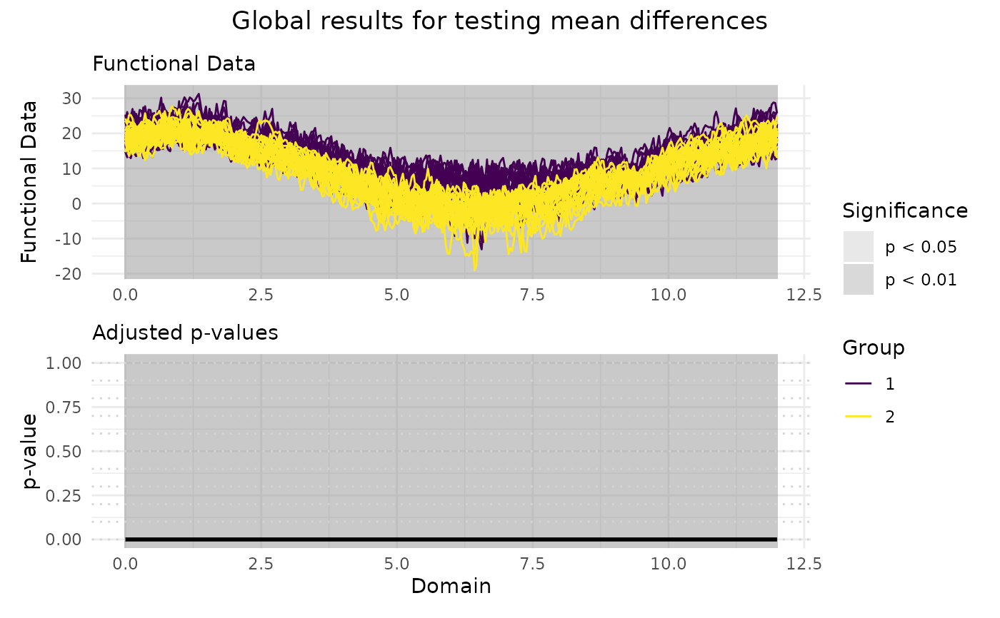

The function implements the Global Testing procedure for testing mean differences between two functional populations. Functional data are tested locally and unadjusted and adjusted p-value functions are provided. The unadjusted p-value function controls the point-wise error rate. The adjusted p-value function controls the interval-wise error rate.
Arguments
- data1
Either a numeric matrix or an object of class
fda::fdspecifying the data in the first sample. If the data is provided within a matrix, it should be of shape \(n_1 \times J\) and it should contain in each row one of the \(n_1\) functions in the sample and in columns the evaluation of each function on a same uniform grid of size \(J\).- data2
Either a numeric matrix or an object of class
fda::fdspecifying the data in the second sample. If the data is provided within a matrix, it should be of shape \(n_2 \times J\) and it should contain in each row one of the \(n_2\) functions in the sample and in columns the evaluation of each function on a same uniform grid of size \(J\).- mu
Either a numeric value or a numeric vector or an object of class
fda::fdspecifying the functional mean difference under the null hypothesis. Ifmuis a constant, then a constant function is used. Ifmuis a numeric vector, it must correspond to evaluation of the mean difference function on the same grid that has been used to evaluate the data samples. Defaults to0.- dx
A numeric value specifying the discretization step of the grid used to evaluate functional data when it is provided as objects of class
fda::fd. Defaults toNULL, in which case a default value of0.01is used which corresponds to a grid of size100L. Unused if functional data is provided in the form of matrices.- B
An integer value specifying the number of iterations of the MC algorithm to evaluate the p-value of the permutation tests. Defaults to
1000L.- paired
A boolean value specifying whether a paired test should be performed. Defaults to
FALSE.- statistic
A string specifying the test statistic to use. Possible values are:
"Integral": Integral of the squared sample mean difference."Max": Maximum of the squared sample mean difference."Integral_std": Integral of the squared t-test statistic."Max_std": Maximum of the squared t-test statistic.
Defaults to
"Integral".- n_perm
An integer value specifying the number of permutations for the permutation tests. Defaults to
1000L.
Value
An object of class ftwosample containing the following components:
data: A numeric matrix of shape \(n \times J\) containing the evaluation of the \(n = n_1 + n_2\) functions on a common uniform grid of size \(p\).group_labels: An integer vector of size \(n = n_1 + n_2\) containing the group membership of each function.mu: A numeric vector of shape \(J\) containing the evaluation of the functional mean difference under the null hypothesis on the same uniform grid used to evaluate the functional samples.unadjusted_pvalues: A numeric vector of size \(J\) containing the evaluation of the unadjusted p-value function on the same uniform grid used to evaluate the functional samples.adjusted_pvalues: A numeric vector of size \(J\) containing the evaluation of the adjusted p-value functione on the same uniform grid used to evaluate the functional samples.
Optionally, the list may contain the following components:
global_pvalue: A numeric value containing the global p-value. Only present if thecorrectionargument is set to"Global".pvalue_matrix: A numeric matrix of shape \(p \times p\) containing the p-values of the interval-wise tests. Element \(i, j\) contains the p-value of the test performed on the interval indexed by \(j, j+1 , \dots, j+(p-i)\). Only present if thecorrectionargument is set to"IWT".
References
A. Pini and S. Vantini (2017). The Interval Testing Procedure: Inference for Functional Data Controlling the Family Wise Error Rate on Intervals. Biometrics 73(3): 835–845.
Pini, A., & Vantini, S. (2017). Interval-wise testing for functional data. Journal of Nonparametric Statistics, 29(2), 407-424
See also
See also plot.ftwosample() for plotting the results.
Examples
# Performing the Global for two populations
Global_result <- Global2(NASAtemp$paris, NASAtemp$milan)
# Plotting the results of the Global
plot(
Global_result,
xrange = c(0, 12),
title = 'Global results for testing mean differences'
)

# Selecting the significant components at 5% level
which(Global_result$adjusted_pvalues < 0.05)
#> [1] 1 2 3 4 5 6 7 8 9 10 11 12 13 14 15 16 17 18
#> [19] 19 20 21 22 23 24 25 26 27 28 29 30 31 32 33 34 35 36
#> [37] 37 38 39 40 41 42 43 44 45 46 47 48 49 50 51 52 53 54
#> [55] 55 56 57 58 59 60 61 62 63 64 65 66 67 68 69 70 71 72
#> [73] 73 74 75 76 77 78 79 80 81 82 83 84 85 86 87 88 89 90
#> [91] 91 92 93 94 95 96 97 98 99 100 101 102 103 104 105 106 107 108
#> [109] 109 110 111 112 113 114 115 116 117 118 119 120 121 122 123 124 125 126
#> [127] 127 128 129 130 131 132 133 134 135 136 137 138 139 140 141 142 143 144
#> [145] 145 146 147 148 149 150 151 152 153 154 155 156 157 158 159 160 161 162
#> [163] 163 164 165 166 167 168 169 170 171 172 173 174 175 176 177 178 179 180
#> [181] 181 182 183 184 185 186 187 188 189 190 191 192 193 194 195 196 197 198
#> [199] 199 200 201 202 203 204 205 206 207 208 209 210 211 212 213 214 215 216
#> [217] 217 218 219 220 221 222 223 224 225 226 227 228 229 230 231 232 233 234
#> [235] 235 236 237 238 239 240 241 242 243 244 245 246 247 248 249 250 251 252
#> [253] 253 254 255 256 257 258 259 260 261 262 263 264 265 266 267 268 269 270
#> [271] 271 272 273 274 275 276 277 278 279 280 281 282 283 284 285 286 287 288
#> [289] 289 290 291 292 293 294 295 296 297 298 299 300 301 302 303 304 305 306
#> [307] 307 308 309 310 311 312 313 314 315 316 317 318 319 320 321 322 323 324
#> [325] 325 326 327 328 329 330 331 332 333 334 335 336 337 338 339 340 341 342
#> [343] 343 344 345 346 347 348 349 350 351 352 353 354 355 356 357 358 359 360
#> [361] 361 362 363 364 365